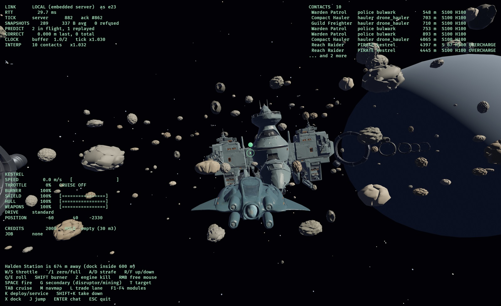
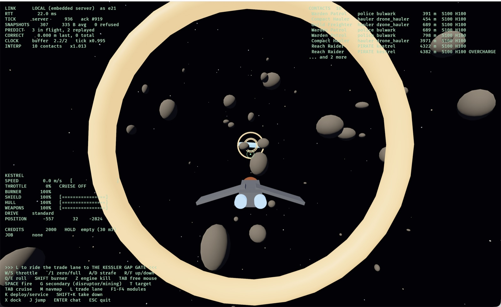
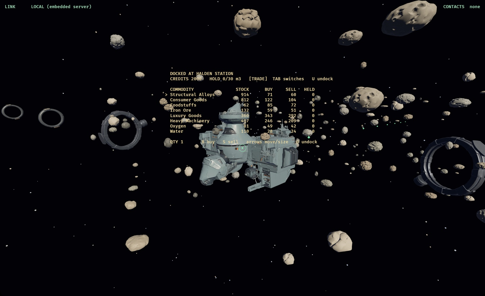
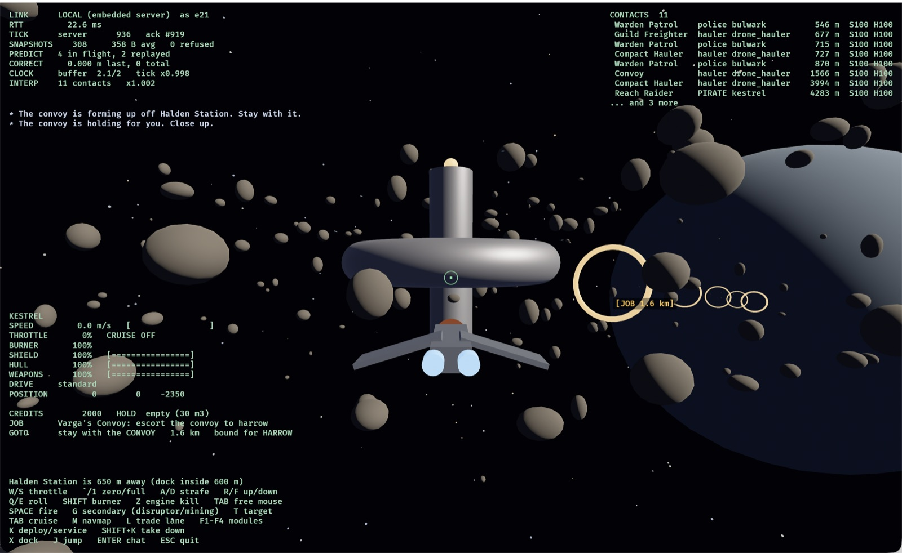
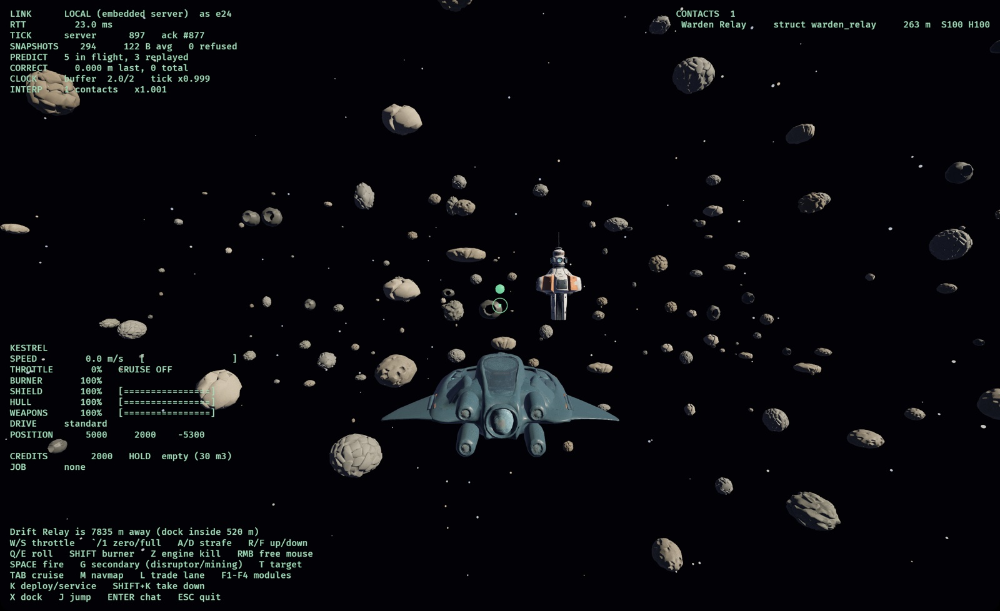
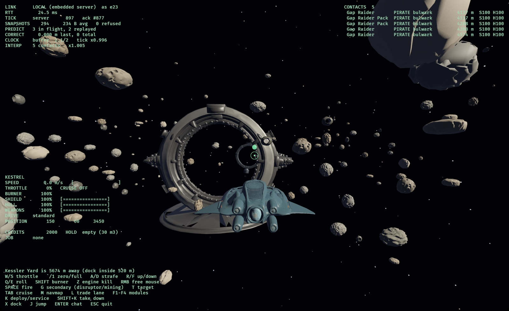

Pilot's Manual
Everything here describes the current build. Where a number is given, it is the game's own.
Getting started
You start in a Kestrel, a light fighter, with 2,000 credits, in Harrow Reach, the one system where the police answer. Halden Station is 1.8 km straight ahead.
- Steer with the mouse. The ship turns toward the crosshair.
- Press 1 for full throttle, or hold W. ` cuts it to zero.
- When the HUD says you are inside Halden's docking range, press X.
- Docked, Tab walks through the station's screens. U undocks.
Reading the HUD

- Bottom left: your ship. Speed, throttle, afterburner, shield, hull, weapon capacitor, drive state, position, credits and hold, then your job, where to go for it, and any active modules.
- Top right: contacts, nearest first: name, kind (
pilot,police,PIRATE,hauler,struct), distance, shield and hull. Tags such asBOOSTorOVERCHARGEmean that ship has a module running. - Top left: link and netcode figures. Corrections should stay near zero.
- Above the controls: what you can do right now: dock, jump, ride a lane, or how far the nearest base is.
- In space: the green circle is your crosshair; a red ring is where to aim at a locked target; an amber
[JOB x km]tag points at your job, and sits at the screen edge when it is behind you.
Flying
Flight is arcade-Newtonian. With engines on, a flight assist steers your velocity toward where the nose points. Press Z for engine kill: thrust and assist off, and you drift on your vector while the nose turns freely. That is the move to learn: kill, turn, shoot, re-engage.
- W/S throttle; ` zero; 1 full.
- A/D strafe; R/F up/down; Q/E roll.
- Hold Shift for afterburner, from a tank that refills: 2.6× top speed on a Kestrel, 2.3× on a Bulwark, 1.7× on a hauler.
- Hold the right mouse button to free the cursor without steering.
Cruise
Tab spools the cruise engines for five seconds, then carries you at 320 m/s with sluggish turning. Firing cancels it. A cruise disruptor hit stops it and blocks it for a few seconds, which is how a pirate keeps a freighter from simply leaving.
Getting around
Trade lanes

Amber rings mark trade lanes. Fly within 300 m of an end ring and press L: the lane carries you to the far ring at 900 m/s, and the stick does nothing until you arrive. Either end is a way in.
A lane is somewhere you can be pulled out of. Anything hostile to you within a kilometre of the line drops you out where you are, and your drive is locked for five seconds. The Halden-to-Harrow lane runs past a raider camp on purpose.
Jump gates and the navmap
Inside a gate's range the HUD offers J to jump. You arrive beside the gate that leads back. M opens the navmap: arrows choose a system, → sets a course, ← clears it. With a course set, the HUD shows the next gate to fly to.
Stations
Dock with X inside a base's docking range; undock with U. Docked, Tab cycles the screens the base has:
| Screen | What it is for |
|---|---|
| Trade | Buy (B) and sell (S) commodities. Arrows move the cursor and size the order. |
| Bar | Jobs and the campaign. A accepts, C abandons yours. Your standings are listed here. |
| Ships | The dealer: buy a hull you have trained for. Your old one goes to the hangar. |
| Outfit | Fit equipment from your locker (F), unfit it (U), take modules on- or offline (O), buy and sell. H switches half. |
| Refinery | Turn ore into refined goods (R). Some is lost; the rest is worth more. |
| Workshop | Manufacture from blueprints (P), research a recipe (E T), invent a locked one (I). Jobs run while you are away. |
| Exchange | A limit order book: post buy and sell orders other pilots fill. |
| Corp | Your corporation's warehouse at this base. |
| Training | Queue skills (T), abandon (C), clear the queue (X). |
Some stations refuse pilots their owners dislike. Kessler Yard and Cinder Hold, the Cinder Clans' bases, turn away anyone who has been hunting the Clans.
Trade

Prices come from stock. A station sitting on a surplus sells cheap; one that is short pays well. Every unit you buy raises the price of the next, so a round trip at one station always loses money, and a good route is two stations whose stock disagrees. Stations produce and consume over time, and NPC haulers work the routes too, so the gaps open and close.
Hold space is in cubic metres, and goods differ in volume: a light, valuable cargo suits a fighter, bulk suits a freighter.
Mining and industry
- Mining: fly into an asteroid field with a mining laser fitted and hold G. Ore fills your hold. Fields deplete as everyone mines them and recover slowly; Vell Shoals in the Drift is the richest, and the most dangerous to reach.
- Refining turns ore into refined goods at a refinery, losing a share in the process.
- Manufacturing turns goods into other goods from a blueprint, on a timer that keeps running while you are logged out. Finished work is handed over at the station it ran at, including while you wait there.
- Research improves one recipe for you alone. E researches materials (each level saves 4% of a batch's inputs) and T researches time (each level saves 6% of a run's time), up to level 5. Each level is a timed job and costs more than the last; one research or invention job per recipe at a time.
- Invention unlocks a locked recipe. The structure kits are locked: a Warden Relay Kit is built only at Compact stations and a Clan Beacon Kit only at Clan stations (Kessler Yard), both with standing 0.3. Press I: the attempt takes materials, a fee and ten minutes, and can fail. A failure keeps nothing, but makes the next attempt 15 points likelier. The Laboratory Operation skill speeds lab work and improves the odds.
- The exchange lets you post a price and wait. Goods and credits are held in escrow until the order fills or you cancel it.
Combat
Every weapon fires a projectile, so you lead your target. Press T to lock the contact nearest your crosshair (Y clears it); a red ring then shows where to aim so your shots and the target arrive together. Space or the left mouse button fires; G fires your secondary, a cruise disruptor on the Kestrel.
Shields absorb damage first and regenerate after a short delay; hull does not regenerate on its own. Different damage types meet different resistances.
Turrets aim themselves. Fixed guns fire along your nose, but a turret mount (the Hauler's two, the Carrack's six) fires at your locked target, leading it, from whichever side of the hull can see it. Lock with T and hold fire: with nothing locked, turrets stay silent. NPC turrets need no trigger, so a convoy's haulers shoot back.
Dying
You wake up docked at the nearest base with your hull repaired. What else happens depends on where you died:
| Security | What you lose |
|---|---|
| High | Nothing. Your cargo is still aboard. |
| Low | Everything in your hold, dropped where you died for anyone to collect. |
| Null | Everything in your hold. An insurance payout softens it. |
Destroyed ships drop cargo containers. Fly over one to scoop it.
Fitting and modules
Every hull has mounts of different kinds and sizes, a power grid and a CPU. Fighters run out of grid first and freighters run out of CPU first, which is what makes them fit differently. Equipment is bought into your locker at a station, then fitted from the Outfit screen. Taking a module offline (O) frees its grid and CPU, which is how an over-budget fitting can still be flown.
Active modules
Some modules are switched on in flight with F1–F4:
| Module | While running |
|---|---|
| Shield Booster | Shield back at 8% a second, even during the regeneration delay. |
| Hull Repair Unit | Hull back at 2.5% a second: the only hull you get back outside a station. |
| Weapon Overcharger | +30% damage, slower capacitor recharge. |
They draw from the same capacitor your guns fire from, and shut down when it is empty. They heat up while running, faster when you are taking hull damage, and at full heat they burn out: the module stops working until a station's repair bay fixes it, which happens automatically when you dock and costs 15% of its price. Enemy NPCs carry and run the same modules.
Skills and ships
Skills train on the wall clock, whether you are logged in or not.
Queue them on the Training screen, or type /train <skill>.
Flight skills (speed, handling, afterburner) take effect the next time
you launch, not mid-flight.
Four hulls are for sale: the Kestrel light fighter you start in, the heavier Bulwark, the Drone-class Hauler, and the Carrack-class Cruiser. Bigger hulls need training first. Buying a hull keeps your old one in the hangar of that station.
The Carrack is a capital ship: 6,000,000 credits at Halden, and it needs the Capital Ships skill, a long one to train. It is slow and turns like a building, but it takes a wing of fighters a long time to kill, and its six heavy turrets do the aiming. A capital docks only at stations; outposts and planets refuse it. If it is destroyed it is towed to the nearest station, or, in a system without one, to the nearest base.
Factions and standing
| Faction | |
|---|---|
| The Reach Compact | The house that governs Harrow Reach. |
| Compact Wardens | Its police. They leave you alone unless you give them reason. |
| Traders Guild | Runs the haulers, the Drift Relay, and most of the honest work. |
| The Cinder Clans | The raiders of the Gap and the Drift. They shoot at almost anyone. |
Standing is a web, not a list. Help the Wardens and the Clans think less of you, because the two hate each other. Killing a faction's ships lowers your standing with it. Standing decides who shoots at you, which stations let you dock, which jobs are offered, and your prices.
Jobs
Every bar has a board. Take a job with A; you can hold one at
a time. Once you have one, the HUD shows a GOTO line and an
amber marker in space.
- Bounties: destroy ships of a faction, anywhere. Paid when you next dock.
- Deliveries: buy the cargo yourself and deliver it to a named base. Paid when you dock there with it.
- Supply runs: a station that is short of something posts a premium for it.
- Escorts: a convoy forms when you launch near the station you took the job at. It waits if you fall more than 1.5 km behind, runs from pirates, and partway along a raid comes for it. Lose it and the job fails. If its destination is in another system, it waits at the gate and jumps when you do. Escorts are paid the moment the convoy arrives.

The campaign
Story jobs appear at the top of the board, one step at a time. The Wardens open it; Ilse Varga, the Traders Guild's dispatcher, takes it through the gate and into the Drift.
At step six the story branches, and the bar says so. Captain Imre Hask of the Wardens wants pressure on the Clans' home; Varga wants to open trade with it. Finishing either closes the other for good, and each path has its own steps after that, including, on Varga's side, a job from the Clans themselves. Each path ends at step nine, and each ending changes the shared world (below).
A world that moves
Kessler Gap and Vell Drift are contested. Each has a balance every pilot pulls on, and the navmap says where it stands:
| System | One way | The other way |
|---|---|---|
| Vell Drift | Held by the Compact: Warden pickets patrol the Drift, and a Warden Line Cruiser joins them when the hold is firm. | Open to Clan trade: the Clan war-band stands down. |
| Kessler Gap | Secured by the Guild: a Guild Escort Wing rides the lane and the extra raiders leave. | Raided by the Clans: a Clan Toll Wing camps the gate, and a Clan Raid Cruiser joins it when the hold is firm. |
Endings push hard. Repeatable jobs push a little. So do kills of the factions involved and Guild freight arriving, which means ordinary play moves it too. Left alone, a balance slowly drifts back to contested, so a system has to be held, not just won. When a patrol moves in or withdraws, everyone on the server is told.
Structures

In null security you can raise a structure from a kit carried in your hold. Warden Relay kits are sold at Drift Relay; Clan Beacon kits at Cinder Hold. You need to be on decent terms with the faction whose colours it will fly.
- K raises it 400 m ahead: clear of stations and gates by 3 km, 4 km from other structures, six to a system at most.
- While it stands it pushes the system's balance every hour. One slows the drift back, two hold a balance, more push it.
- It covers friends within 2 km: shields and hull back for pilots its faction likes and for its faction's ships.
- It needs upkeep: oxygen for a relay, food for a beacon, about 20 units a day. It starts with two days and holds a week. Unfed, it does nothing and its hull decays until it is gone. You are warned when it runs low.
- K beside your own structure feeds it from your hold and repairs it for credits. Shift+K takes it down and gives you the kit back.
- Its faction's enemies attack it on sight. You are told when it is under fire, and the whole server hears when one goes up or comes down.
- A structure built by a corporation member belongs to the corporation: any member can feed it, and an officer can take it down.
Corporations and fleets
Both are managed from chat (Enter):
| Command | |
|---|---|
/corp found <TICKER> <name> | Found a corporation. |
/corp invite|accept|leave|kick|promote|demote | Membership. Founders and directors invite, remove and withdraw. |
/corp deposit <n> · withdraw <n> | The shared wallet. |
/fleet invite|accept|leave|kick | Fly together: fleet members stay on your HUD at any range, and kills count for everyone on the same contract. |
/c · /f · /w <pilot> | Talk to your corporation, your fleet, or one pilot. |
/train <skill> | Queue a skill. |
The systems

| System | Security | |
|---|---|---|
| Harrow Reach | High | Home. Halden Station, an industrial hub; the farming planet Harrow. Warden patrols, and a raider camp on the planet lane. |
| Kessler Gap | Low | No police. Kessler Yard, a Clan outpost that pays well for what it cannot make. Gap Raiders on the lane. |
| Vell Drift | Null | Nobody's. Drift Relay, a Guild waystation; Cinder Hold, the Clans' home; the richest rock on the server; and the Clan war-band. Structures can be raised here. |
The three are gated to one another in a triangle.
Playing together
Single-player runs the same server inside the game. To play together, one person runs the dedicated server and the others connect to it. A secured server issues each player a connect token; ask whoever runs it for yours.
All controls
| Key | In flight |
|---|---|
| Mouse | Steer. Hold the right button to free the cursor. |
| W S · ` 1 | Throttle up, down · zero, full |
| A D R F Q E | Strafe left, right, up, down · roll |
| Shift | Afterburner |
| Z | Engine kill |
| Tab | Cruise engines |
| Space / left mouse | Fire |
| G | Secondary: disruptor or mining laser |
| T Y | Lock target ahead · clear |
| F1–F4 | Active modules on/off |
| X · J · L | Dock · jump · ride a trade lane |
| K · Shift+K | Deploy or service a structure · take yours down |
| M | Navmap (arrows choose, → sets course, ← clears) |
| Enter | Chat (Esc cancels) |
| Esc | Quit |
| Key | Docked |
| Tab · U | Next screen · undock |
| Arrows | Move the cursor and size orders, on every screen |
| B S | Buy · sell (trade, exchange, ships, outfit) |
| A C | Accept a job · abandon yours (bar) |
| R P | Refine · start production |
| E T I | Workshop: research materials · research time · invent |
| T C X | Train · abandon · clear queue (training) |
| H F U O | Switch half · fit · unfit · online/offline (outfit) |